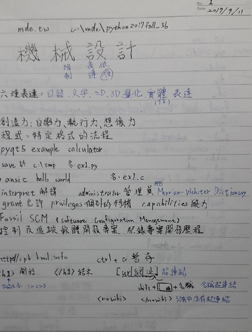
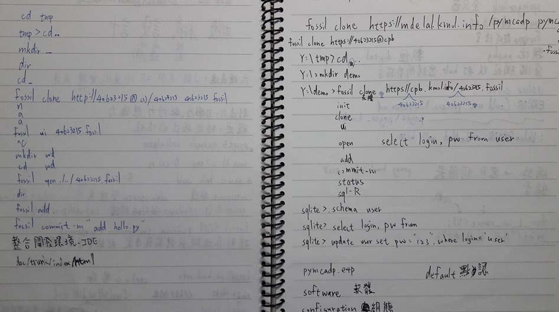
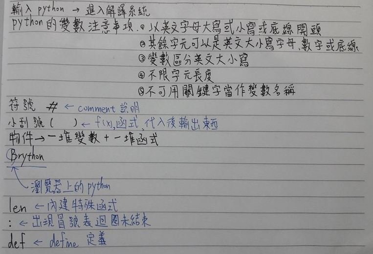
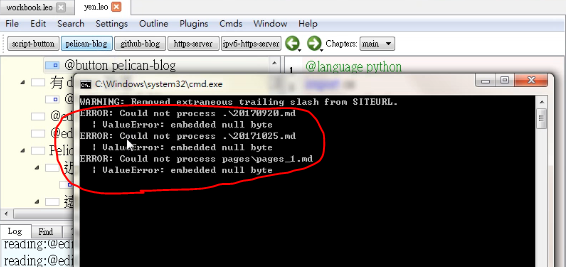

<!doctype html>
<html lang="en">
<head>
    <meta charset="utf-8">
<title>
2017 Spring 機械設計工程系網際內容管理
</title>
    <meta name="description" content="A framework for easily creating beautiful presentations using HTML">
    <meta name="author" content="Hakim El Hattab">
    
    <meta name="apple-mobile-web-app-capable" content="yes">
    <meta name="apple-mobile-web-app-status-bar-style" content="black-translucent">
    
    <meta name="viewport" content="width=device-width, initial-scale=1.0, maximum-scale=1.0, user-scalable=no">
    
    <link rel="stylesheet" href="data/reveal/reveal.css">
    <link rel="stylesheet" href="data/reveal/black.css" id="theme">
    
    <!-- Theme used for syntax highlighting of code -->
    <link rel="stylesheet" href="data/reveal/zenburn.css">

    <!-- Printing and PDF exports -->
    <script>
        var link = document.createElement( 'link' );
        link.rel = 'stylesheet';
        link.type = 'text/css';
        link.href = window.location.search.match( /print-pdf/gi ) ? 'data/reveal/pdf.css' : 'data/reveal/paper.css';
        document.getElementsByTagName( 'head' )[0].appendChild( link );
    </script>

    <!--[if lt IE 9]>
    <script src="data/reveal/html5shiv.js"></script>
    <![endif]-->
</head>

<body>
<div class="reveal">
<!-- Any section element inside of this container is displayed as a slide -->
<div class="slides">
<section data-markdown>
    <script type="text/template">
## 2017Fall CADP 與 CP

### 虎科大機械設計工程系

<small>
Created by [KMOLab](http://kmolab.github.io/blog/)
</small>

[CADP 與 CP 課程網誌](blog/index.html)


    </script>
</section>


						
<section data-markdown>
    <script type="text/template">
# 機械設計工程系
# 40623215吳柏毅


    </script>
</section>


						


						
<section>
    <section data-markdown>
        <script type="text/template">


# 學習紀錄
    
    
    
    
        </script>
    </section>


    						
    <section data-markdown>
        <script type="text/template">
* W1-W3 了解機械設計的意義以及三種創造力。從 https://cadpb.kmol.info/4052 clone 網誌與投影片架構檔案，然後提交推送到自己的倉儲。    

* W4 適應熟悉Leo Editor的操作以及整合W1-W3的學習內容。

* W6 複習之前所學內容，練習for迴圈用法

* W7 從隨身碟啟動系統開始，到完成新增第七週個人倉儲網誌中的學習心得。

* W8 利用瀏覽器中的 Brython 程式環境，練習如何使用 for 迴圈，函式與類別定義。
        </script>
    </section>


    						
</section>


						
<section>
    <section data-markdown>
        <script type="text/template">
    # 筆記


        </script>
    </section>


    						
    <section data-markdown>
        <script type="text/template">


        </script>
    </section>


    						
    <section data-markdown>
        <script type="text/template">



        </script>
    </section>


    						
    <section data-markdown>
        <script type="text/template">


        </script>
    </section>


</section>


						
<section>
    <section data-markdown>
        <script type="text/template">
    # 學習心得

        </script>
    </section>


    						
    <section data-markdown>
        <script type="text/template">
* 一開始上課戰戰兢兢的，因為根本不知道是在學什麼東西，起初連cd_都不知道是幹嘛的，推進端遠端部分也都不熟悉，只能回宿舍後再找同學請教並完成功課，後來就慢慢進入狀況了，開始熟悉clone檔案還有Leo Editor的操作以及整合W1至今的學習內容，現在熟練各個指令用意及使用，已可以獨立完成新增網誌及錄影、上傳、嵌入。

        </script>
    </section>


    						
</section>


						
<section data-markdown>
    <script type="text/template">
# 遇到的問題

* 推近端會多出現"ERROR: Could not process .\20170920.md : ValueError: embedded null byte"等字樣，不知道是出了什麼問題，所以只能用同學的電腦做。


    </script>
</section>


						
<section>
<section data-markdown>
    <script type="text/template">
<!-- 請注意, @others 不可以內縮 -->
##自評成績
#73

    </script>
</section>


						
<section data-markdown>
    <script type="text/template">
<!-- 請注意, @others 不可以內縮 -->
## 利用 Markdown 寫投影片
以下利用 Markdown 格式展示 Python 程式碼:
```
# use threading and subprocess to threading the make process
import os
import subprocess
import threading

def domake():
    
    path = "../exposed/api/exposed"
    ubuntu = "../Ubuntu"
    
    # create obj path
    
    if not os.path.exists(path+"/../obj"):
        os.makedirs(path+"/../obj")
    
    subprocess.call(["make", "clean"], cwd=path)
    subprocess.call("make", cwd=path)
    subprocess.call(["cp", "{libslvs.so, _slvs.so, slvs.py}", ubuntu], cwd=path)
    subprocess.call(["python3", "circle_ex.py"], cwd=path+"/"+ubuntu)
    
make = threading.Thread(target=domake)
make.start()
```
    </script>
</section>


						
<section data-markdown>
    <script type="text/template">
## 使用 iframe 導入影片

### 導入影片 template

<iframe src="https://player.vimeo.com/video/183950627" width="640" height="492" frameborder="0" webkitallowfullscreen mozallowfullscreen allowfullscreen></iframe>
    </script>
</section>


						
</section>
</div>

</div>

<script src="data/reveal/head.min.js"></script>
<script src="data/reveal/reveal.js"></script>
<script>
        // More info https://github.com/hakimel/reveal.js#configuration
        Reveal.initialize({
            controls: true,
            progress: true,
            history: true,
            center: true,

            transition: 'slide', // none/fade/slide/convex/concave/zoom

            // More info https://github.com/hakimel/reveal.js#dependencies
            dependencies: [
                { src: 'data/reveal/classList.js', condition: function() { return !document.body.classList; } },
                { src: 'data/reveal/marked.js', condition: function() { return !!document.querySelector( '[data-markdown]' ); } },
                { src: 'data/reveal/markdown.js', condition: function() { return !!document.querySelector( '[data-markdown]' ); } },
                { src: 'data/reveal/highlight.js', async: true, callback: function() { hljs.initHighlightingOnLoad(); } },
                { src: 'data/reveal/zoom.js', async: true },
                { src: 'data/reveal/notes.js', async: true },
                { src: 'data/reveal/math.js', async: true }
            ]
        });
</script>
</body>
</html>

